Flex Container
Top Games - 90s (Display Flex / Align Items)
Super Mario
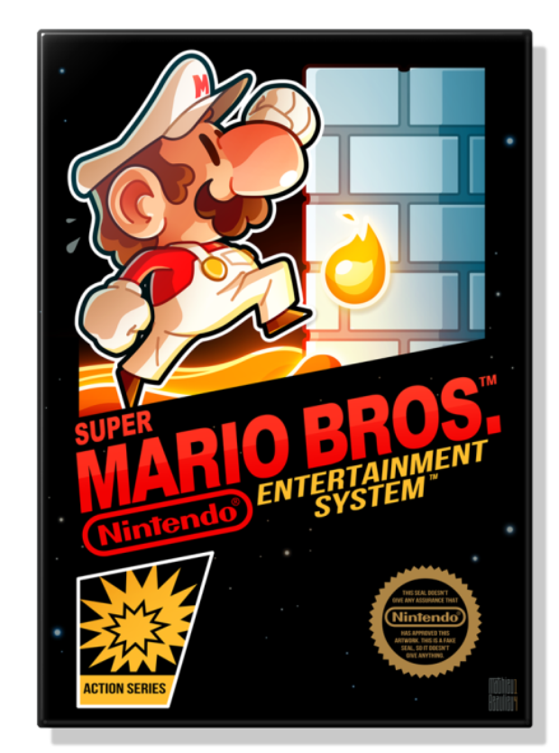Stree Fighter
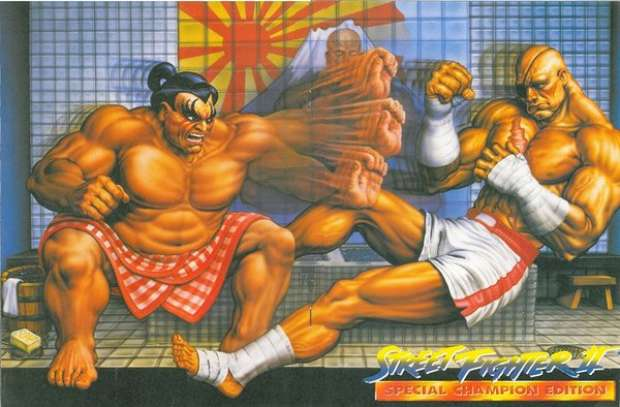Sonic
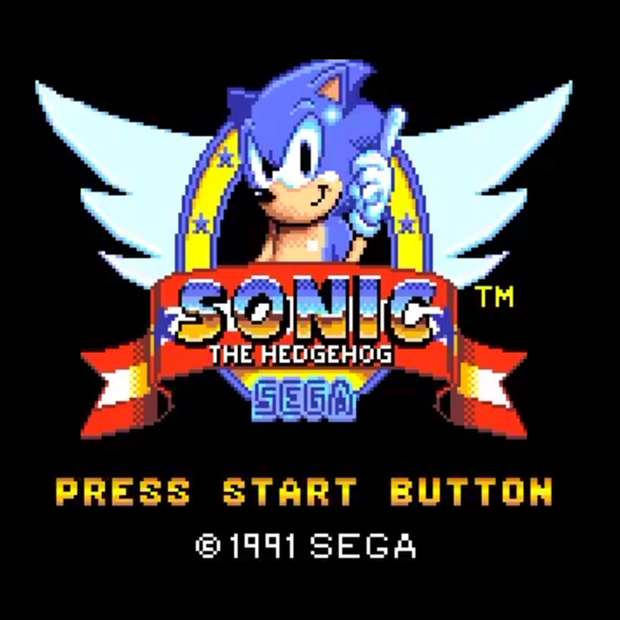Prince of Persia
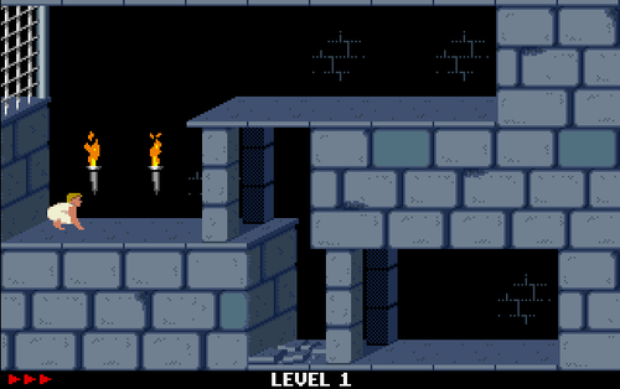Mortal Kombat
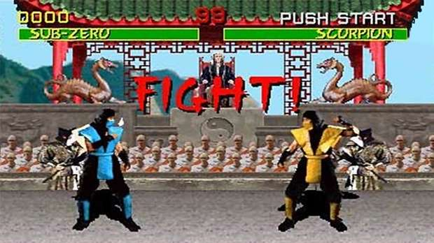Doom
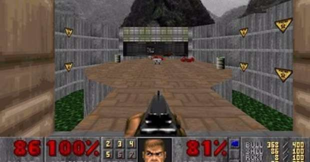Top 10 Most Important Game Characters (Flex Wrap / Align Content)
1 – Mario (Donkey Kong, Nintendo, 1981)
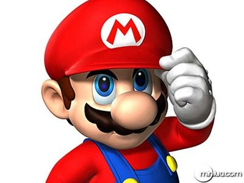2 – Link (The Legend of Zelda, Nintendo, 1986)
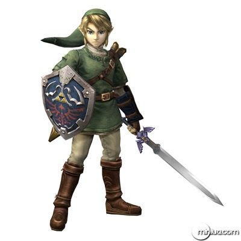3 – Master Chief (Halo: Combat Evolved, Microsoft, 2001)
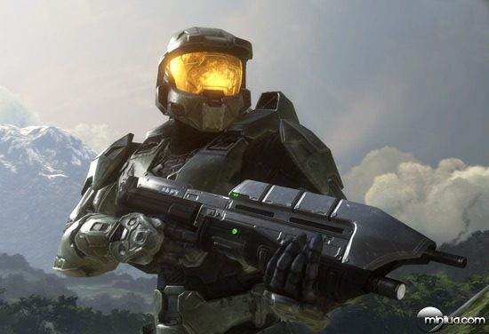4 – Solid Snake (Metal Gear, Konami, 1987)
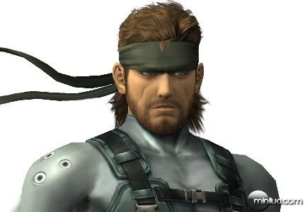5 – Cloud Strife (Final Fantasy VII, Square, 1997)
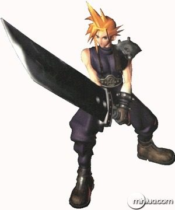6 – PAC-Man (PAC-Man, Namco, 1980)

7 – Lara Croft (Tomb Raider, Eidos 1996)
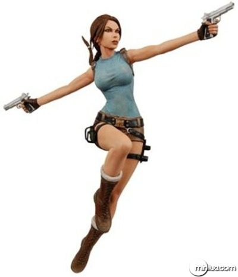8 – Gordon Freeman (Half-Life, Valve, 1998)
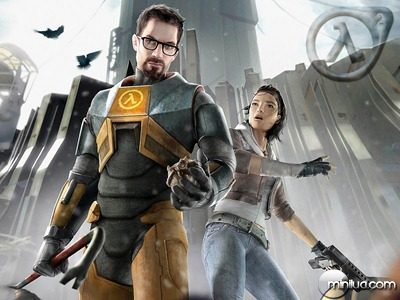9 – Kratos (God of War, Sony, 2005)
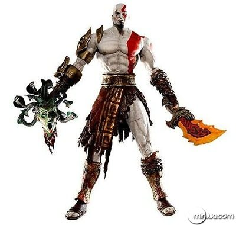10 – Sonic (Sonic the Hedgehog, Sega, 1990)
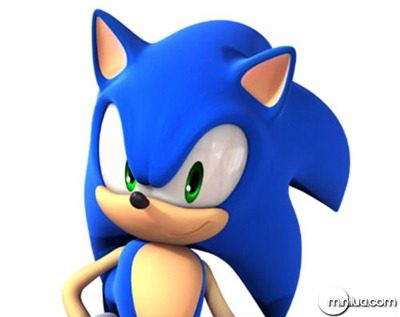The Origins of 3 Classic Board Games (Flex Flow)
Chess
Although most people probably that Chess is an ancient game, compared to all the other board games on this list, it is relatively young. While the exact origins of Chess are unknown, most historians agree that the game originated in India during the Gupta Empire around the 6th century AD – some historians believe it originated in China. The early form of the game from India was called chaturanga, which featured “four divisions of the military”: infantry, cavalry, elephantry, and chariotry – these game pieces eventually evolved into the modern-day pawn, knight, bishop, and rook, respectively. Like many early games, the rules of Chess evolved as it spread throughout the world, and the modern rules of the game were formed around the 15th century in Europe.
Backgammon
Backgammon is another ancient game that is even older than Chess. In 2004, archaeologists discovered a gameboard in the ancient city of Shahr-e Sukhteh in Iran resembling the game of Backgammon. The board was dated to around 3000 BCE and is believed to be the oldest Backgammon board ever found. It is made of ebony and features sixty markers made of turquoise and agate, as well as a pair of dice. The game’s rules changed as it was played in different countries and the oldest game with rules almost identical to modern Backgammon was called “tabula” from the Byzantine Empire in Greece dating back to around 480 AD.
Checkers
Checkers also called Draughts is one of the oldest board games in the world that is still played today. The origins of the game can be traced back to the ancient city of Ur in southern Mesopotamia (modern-day Iraq), dating back to about 3000 BCE. A game board resembling Checkers with slight variations was carbon dated to this time period. Over the years, the game evolved as it was introduced to other countries and today, the most popular forms of Checkers are English draughts/American checkers and Russian draughts. The game has remained popular all around the world and the first World Championship in International draughts began in 1885 and took place in France.
Gaming Console Evolution (Flex Direction / Justify Content)
2012 WII U
Nintendo tried giving the Wii a go again with its Wii U offering, but didn't offer much of an upgrade on the previous console. A controller with a display screen and bigger hardware was how Nintendo pushed the design but it didn't do well against Sony and Microsoft's releases soon after.
2013 Sony Playstation 4
Playstation's latest offering is considered to be the best yet. It boasts a good looking console, a revolutionized PS Store and plenty of exclusive titles for player to enjoy.
2013 Xbox One
Microsoft sold one million consoles in 24 hours after release, with a redesigned controller and backwards compatibility on selected Xbox 360 titles part of the appeal. Microsoft stopped releasing sales figures but the console appears to be a favourite with the brand's fans.
2013 GTA V
With 33.8 million players jumping online to play the game since release across 224 countries, you can definetely agree that Grand Theft Auto V is a monster of a game.
2017 Nitendo Switch
A revolutionary consle that allows you to take your game with you whith a portable screen and clip in controllers, the Switch was well received on release in 2017. It made up for the poor uptake on the Wii U and with new Zelda titles and Super Mario on board, sales have been pretty good.